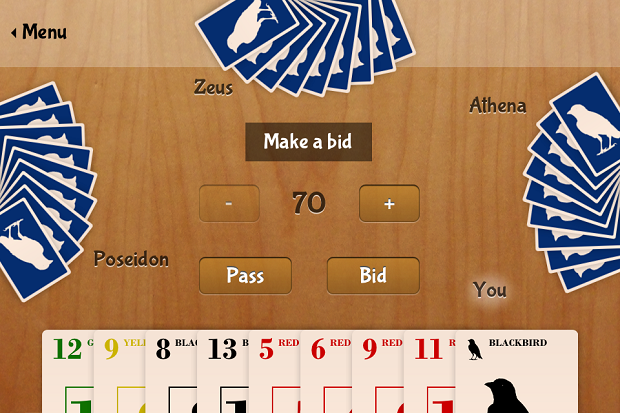

This game is similar to the classic ROOK® card game*.
Compete against the computer in this classic trick-taking game. Bid aggressively for the chance to declare trump. Take tricks with pointers to reach your bid or you’ll get set!
- Customize the rules to fit the way you play
- See if you can beat the computer


* This is not in any way endorsed by or affiliated with Hasbro, Inc. ROOK® is a registered trademark of Hasbro, Inc.